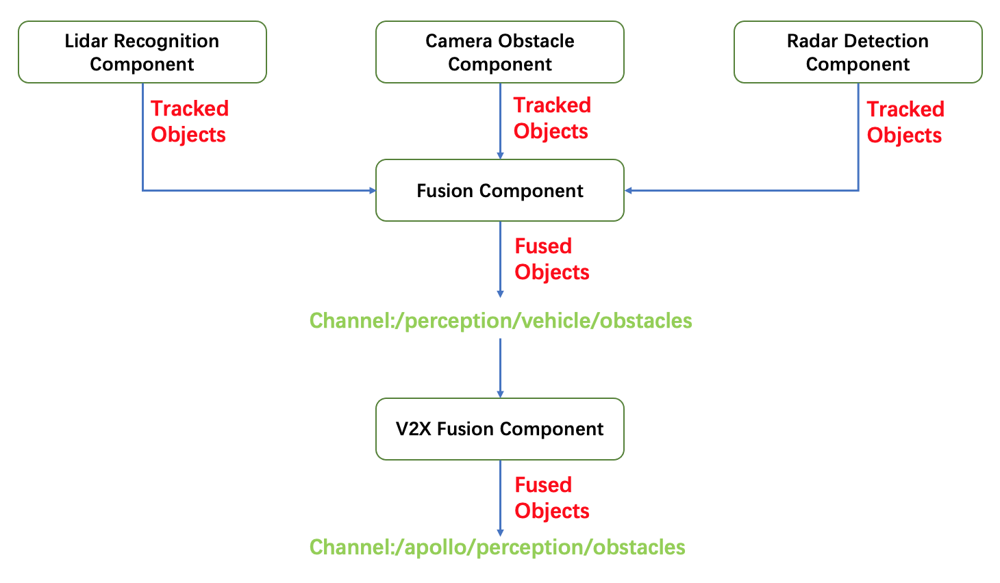

如何添加新的fusion融合系统
Perception中的详细模型结构如下： 
本篇文档所介绍的fusion融合系统位于图中的Fusion Component中。当前Fusion Component的架构如下：

从以上结构中可以清楚地看到fusion融合系统是位于Fusion Component的 ObstacleMultiSensorFusion 中的抽象成员类 BaseFusionSystem 的派生类。下面将详细介绍如何基于当前结构添加新的fusion融合系统。
Apollo默认提供了1种fusion融合系统 – Probabilistic Fusion，它可以轻松更改或替换为不同的系统。每种系统的输入都是各传感器检测匹配跟踪后的目标级障碍物信息，输出都是融合匹配跟踪后的目标级障碍物信息。本篇文档将介绍如何引入新的fusion融合系统，添加新系统的步骤如下：
定义一个继承基类
base_fusion_system的类实现新类
NewFusionSystem为新类
NewFusionSystem配置config的proto文件更新config文件使新的系统生效
为了更好的理解，下面对每个步骤进行详细的阐述:
定义一个继承基类 base_fusion_system 的类
所有的fusion融合系统都必须继承基类 base_fusion_system，它定义了融合系统的基础成员及其接口。 以下是融合系统继承基类的示例:
namespace apollo {
namespace perception {
namespace fusion {
class NewFusionSystem : public BaseFusionSystem {
public:
NewFusionSystem();
~NewFusionSystem();
NewFusionSystem(const NewFusionSystem&) = delete;
NewFusionSystem& operator=(const NewFusionSystem&) = delete;
bool Init(const FusionInitOptions& init_options) override;
bool Fuse(const FusionOptions& options,
const base::FrameConstPtr& sensor_frame,
std::vector<base::ObjectPtr>* fused_objects) override;
std::string Name() const override;
}; // class NewFusionSystem
} // namespace fusion
} // namespace perception
} // namespace apollo
基类 base_fusion_system 已定义好各虚函数签名，接口信息如下：
struct FusionInitOptions {
std::vector<std::string> main_sensors;
};
struct FusionOptions {};
struct alignas(16) Frame {
EIGEN_MAKE_ALIGNED_OPERATOR_NEW
Frame() { sensor2world_pose.setIdentity(); }
void Reset() {
timestamp = 0.0;
objects.clear();
sensor2world_pose.setIdentity();
sensor_info.Reset();
lidar_frame_supplement.Reset();
radar_frame_supplement.Reset();
camera_frame_supplement.Reset();
}
// @brief sensor information
SensorInfo sensor_info;
double timestamp = 0.0;
std::vector<std::shared_ptr<Object>> objects;
Eigen::Affine3d sensor2world_pose;
// sensor-specific frame supplements
LidarFrameSupplement lidar_frame_supplement;
RadarFrameSupplement radar_frame_supplement;
CameraFrameSupplement camera_frame_supplement;
UltrasonicFrameSupplement ultrasonic_frame_supplement;
};
typedef std::shared_ptr<Frame> FramePtr;
typedef std::shared_ptr<const Frame> FrameConstPtr;
struct alignas(16) Object {
EIGEN_MAKE_ALIGNED_OPERATOR_NEW
Object();
std::string ToString() const;
void Reset();
int id = -1;
PointCloud<PointD> polygon;
Eigen::Vector3f direction = Eigen::Vector3f(1, 0, 0);
float theta = 0.0f;
float theta_variance = 0.0f;
Eigen::Vector3d center = Eigen::Vector3d(0, 0, 0);
Eigen::Matrix3f center_uncertainty;
Eigen::Vector3f size = Eigen::Vector3f(0, 0, 0);
Eigen::Vector3f size_variance = Eigen::Vector3f(0, 0, 0);
Eigen::Vector3d anchor_point = Eigen::Vector3d(0, 0, 0);
ObjectType type = ObjectType::UNKNOWN;
std::vector<float> type_probs;
ObjectSubType sub_type = ObjectSubType::UNKNOWN;
std::vector<float> sub_type_probs;
float confidence = 1.0f;
int track_id = -1;
Eigen::Vector3f velocity = Eigen::Vector3f(0, 0, 0);
Eigen::Matrix3f velocity_uncertainty;
bool velocity_converged = true;
float velocity_confidence = 1.0f;
Eigen::Vector3f acceleration = Eigen::Vector3f(0, 0, 0);
Eigen::Matrix3f acceleration_uncertainty;
double tracking_time = 0.0;
double latest_tracked_time = 0.0;
MotionState motion_state = MotionState::UNKNOWN;
std::array<Eigen::Vector3d, 100> drops;
std::size_t drop_num = 0;
bool b_cipv = false;
CarLight car_light;
LidarObjectSupplement lidar_supplement;
RadarObjectSupplement radar_supplement;
CameraObjectSupplement camera_supplement;
FusionObjectSupplement fusion_supplement;
};
using ObjectPtr = std::shared_ptr<Object>;
using ObjectConstPtr = std::shared_ptr<const Object>;
实现新类 NewFusionSystem
为了确保新的融合系统能顺利工作， NewFusionSystem 至少需要重写 base_fusion_system 中定义的接口Init(), Fuse()和Name()函数。其中Init()函数负责完成加载配置文件，初始化类成员等工作；而Fuse()函数则负责实现系统的主体流程。一个具体的NewFusionSystem.cc实现示例如下：
namespace apollo {
namespace perception {
namespace fusion {
bool NewFusionSystem::Init(const FusionInitOptions& init_options) {
/*
你的系统初始化部分
*/
}
bool NewFusionSystem::Fuse(const FusionOptions& options,
const base::FrameConstPtr& sensor_frame,
std::vector<base::ObjectPtr>* fused_objects) {
/*
你的系统实现部分
*/
}
std::string NewFusionSystem::Name() const {
/*
返回你的融合系统名称
*/
}
FUSION_REGISTER_FUSIONSYSTEM(NewFusionSystem); //注册新的fusion_system
} // namespace fusion
} // namespace perception
} // namespace apollo
为新类 NewFusionSystem 配置config的proto文件
按照下面的步骤添加新fusion融合系统的配置信息:
根据系统要求为新fusion融合系统配置config的
proto文件。作为示例，可以参考以下位置的probabilistic_fusion_config的proto定义：modules/perception/proto/probabilistic_fusion_config.proto.定义新的
proto之后，例如newfusionsystem_config.proto，在文件头部输入以下内容：syntax = "proto2"; package apollo.perception.fusion; message NewFusionSystemConfig { double parameter1 = 1; int32 parameter2 = 2; }
参考如下内容更新
modules/perception/production/conf/perception/fusion/config_manager.config文件:model_config_path: "./conf/perception/fusion/modules/newfusionsystem.config"
参考同级别目录下
modules/probabilistic_fusion.config内容创建newfusionsystem.config:model_configs { # NewFusionSystem model. name: "NewFusionSystem" version: "1.0.0" string_params { name: "root_dir" value: "./data/perception/fusion/" } string_params { name: "config_file" value: "newfusionsystem.pt" } }参考
probabilistic_fusion.pt在目录modules/perception/production/data/perception/fusion/中创建newfusionsystem.pt文件：注意：此处 "*.pt" 文件应对应步骤1，2中的proto文件格式.
更新config文件使新的系统生效
要使用Apollo系统中的新fusion融合系统，需要将 modules/perception/production/data/perception/fusion/fusion_component_conf.pb.txt 中的 fusion_method 字段值改为 “NewFusionSystem”。
在完成以上步骤后，您的新fusion融合系统便可在Apollo系统中生效。